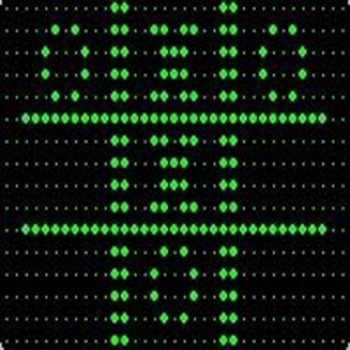

El contexto que rodea la invención de los primeros videojuegos es la 2ª Guerra Mundial, que al igual que la mayoría de las guerras a lo largo de la historia, supuso un adelanto en muchos aspectos de la ciencia. Y es que en épocas bélicas y los años que les preceden, las naciones invierten más dinero al habitual destinado al desarrollo armamentístico u otros factores que les puedan poner un paso adelante del enemigo.
Al finalizar la 2ª Guerra Mundial científicos y matemáticos habían logrado grandes avances en el campo de las computadoras.
A finales de los 40 las computadoras eran grandes maquinas con cientos de luces y botones que ocupaban habitaciones enteras, costaban millones y no había un estándar establecido como el binario o el propio hardware.
Los primeros videojuegos
OXO

OXO fue una versión electrónica del juego del tres en línea y es tal vez el primer videojuego de la historia. Aunque existen discrepancias a la hora de considerarlo como el primer videojuego de la historia, ya que no cuenta con video animación.
Tennis for two

Tennis for Two es un videojuego de tenis desarrollado por William Higinbotham en 1958 usando para ello un osciloscopio, el juego constaba de una línea horizontal que era el campo de juego y otra pequeña vertical en el centro del campo representando la red. Los jugadores debían elegir el ángulo en el que salía la bola y golpearla.
Las primeros arcade
Galaxy Game

Galaxy Game es el más antiguo video juego de maquina tragamonedas. Fue instalado en Tresidder Union en la Universidad de Stanford en septiembre de 1971, dos meses antes del lanzamiento de Computer Space, el primer juego producido en masa.
Computer space

Computer Space es un videojuego arcade lanzado en noviembre de 1971 por Nutting associates. Creado por Nolan Bushnell y Ted Dabney, quienes más tarde fundarían Atari, está aceptado generalmente que fue el primer videojuego vendido comercialmente que funcionaba con monedas.
Pong arcade

Pong fue un videojuego publicado por Atari, creado por Nolan Bushnell y lanzado el 29 de noviembre de 1972. Pong está basado en el deporte de tenis de mesa (o ping pong). Pong es un juego de deportes en dos dimensiones que simula un tenis de mesa.